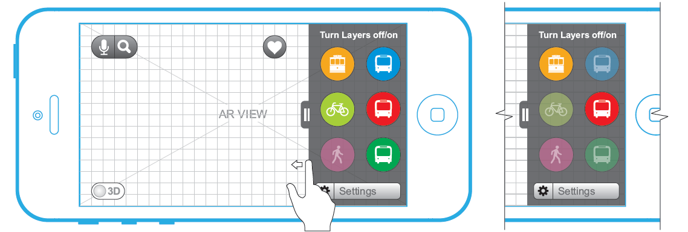
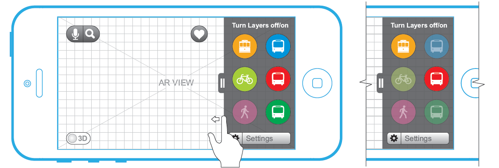

EZ-Ballot
A 'universal design' voting application to vote without assistance.


The application is designed using following design principles:
- Equitable use
- Flexibility in use
- Simple and intuitive use
- Perceptible information
- Tolerance for error
- Low physical effort
- Size and space for approach & use
The design communicates necessary information effectively to the user, regardless of ambient conditions or the user’s sensory abilities.
PeerSpot - AR App
The peerspun project aims into making the Gatech campus transit easier by gathering data from all available options and simplifying it into a simple decision - yes or no.
Motivation
Most users access nextbus.com to get the arrival time of their bus. The bus service itself is not very reliable and is subject to constant delays due to traffic, among other reasons. In such situations, students must walk to class, and are often late due to waiting then eventually being forced to walk. Our initial user surveys show that delays in the trolley service ranked as the most frustration-inducing aspect of navigation around our campus. Our team’s system will help bridge these gaps in intra-college transit by notifying users about trolley delays and suggesting to them nearby viaCycle stations along with their availability.
 

In this project we went through the process of Interviews, Surveys, Designing Alternatives, Design Presentation, Protyping and User Evaluation.
Evaluation Summary
Users were routinely able to locate trolleys, buses, and ViaCycle stations. They also had little trouble determining the closest ViaCycle station with bikes available. From this we determine that the transit option markers worked effectively. Since the participants had such difficulty with the decision screen, an integral element of the system's core functionality, a clearer or alternate means of exiting the decision screen should be made available. The AR aspect of the interface was met with praise from all participants, and was also quite easily adapted to throughout the cognitive walkthrough task trials.
ROSS API
The Responsive Objects, Surfaces and Spaces (ROSS) Application Programming Interface (API) is a way for applications to run across a variety of tangible platforms tabletop computers, touch-screen mobile devices, responsive walls, and interactive 3D spaces.
The Goal
The goal of the ROSS API is to simplify the complicated communication problems between new Tangible User Interfaces (TUIs) that researchers and developers have built and continue to build. These new TUIs often have new sensing, actuation, and display technologies that require significant programming efforts to communicate with other TUIs.

The ROSS API is designed to allow devices that are very different but have common interactions communicate with each other. The API's nested structure makes interaction visible between various software levels. The core of the ROSS API rests on the notion that the different objects, surfaces and spaces in a responsive environment can exist in nested relationships with respect to one another.
Lost and Found system
There is need of a system for helping people locate their missing belongings following a disaster. It'd be a distributed system.
The project followed Universal Design principles
There are two methods of interaction
- Touch screens: For user's familiar with technology
- Digital Levers: Resembling mechanical levers, these physical elements will provide the familiarity of old mechanical systems and the efficiency of digital devices.


The system provided following tasks:
- Check-in an item
- Checkout an item
- Lookup an item
- Add missing item
Design Constraints
The user is assumed to be familiar with conveyer belts and kiosks.